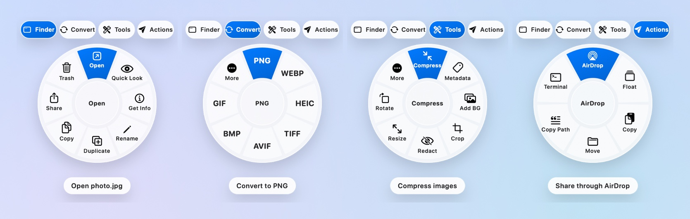
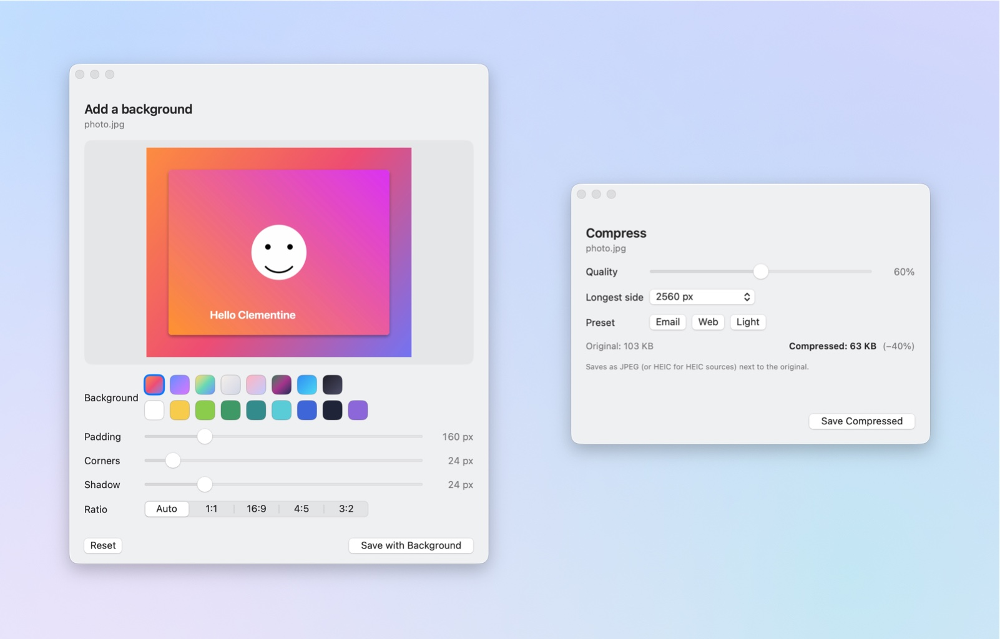
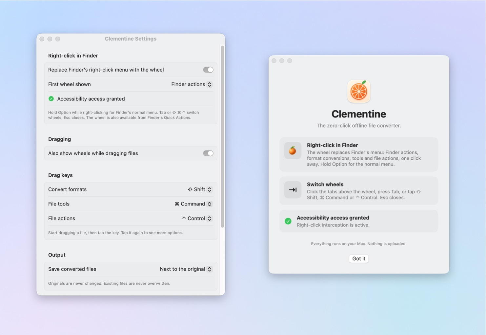

The right-click file converter
for the Mac Finder
Right-click any file and a wheel appears. Convert, compress, crop, add a background, redact, AirDrop, plus Finder's own actions. Free, open source, and it never leaves your Mac.
macOS 13 or later · Apple silicon · MIT licensed · No account, no upload, no tracking

One right-click, four wheels
Switch faces with the tabs above the wheel, the Tab key, or ⇧ ⌘ ⌃. Hold Option while right-clicking for Finder's normal menu. Esc closes.
Finder
Open, Quick Look, Get Info, Rename, Duplicate, Copy, Share, Trash. On empty space: New Folder, Paste, Select All, View Options, Clean Up, Terminal.
Convert
Every format the selected files can become: images, video, audio, PDF, documents, spreadsheets, subtitles and archives. Multi-select converts each file.
Tools
Compress with a live size estimate, Add Background, Crop, Redact faces, strip Metadata, Resize, Rotate, Mono, One PDF, Collage, Merge, Split, Trim, Mute, GIF.
Actions
AirDrop, a floating shelf you can drag files back out of, Copy, Move, Copy Path, Open in Terminal.

Formats it handles
Conversions use Apple's ImageIO, AVFoundation, PDFKit and Vision frameworks, with a bundled ffmpeg for the formats macOS can't do natively.
| Input | Output |
|---|---|
| Images: JPG, PNG, HEIC, TIFF, WebP, AVIF, BMP, GIF, SVG, PSD, RAW | PNG, JPG, WebP, HEIC, TIFF, AVIF, BMP, GIF, PDF |
| Video: MP4, MOV, MKV, WebM, AVI, WMV, MPEG, TS, 3GP | MP4, MOV, MKV, WebM, animated GIF; audio as M4A, MP3, WAV, AIFF, FLAC, OGG, Opus |
| Audio: MP3, M4A, WAV, FLAC, AIFF, OGG, Opus, WMA, CAF | M4A, MP3, WAV, AIFF, FLAC, CAF, OGG, Opus |
| PNG or JPG pages at 300 DPI, TXT, DOCX, RTF, HTML | |
| Documents: DOCX, DOC, ODT, RTF, TXT, HTML, Markdown | PDF, DOCX, TXT, RTF, HTML, ODT, DOC, Markdown |
| Spreadsheets: CSV, TSV, XLSX | XLSX, CSV, TSV, JSON, HTML, Markdown |
| Subtitles: SRT, VTT | SRT, VTT, plain text |
| Archives: ZIP, TAR, GZ, BZ2, XZ | Extract; pack anything into ZIP, TAR or TAR.GZ |
Install in a minute
Apple-silicon Mac, macOS 13 Ventura or later. No Xcode needed for the download; the source builds with the Command Line Tools.
- Download Clementine.zip and unzip it.
- Move
Clementine.appto Applications. - The app isn't notarized: right-click it, choose Open, and confirm. (Or run
xattr -d com.apple.quarantine /Applications/Clementine.app.) - Allow Accessibility (for the right-click wheel) and Finder automation (for Finder's own actions) when asked.
Or build it yourself:
git clone https://github.com/mushinskyy/clementine.git
cd clementine
./build.sh
Questions
Is Clementine free?
Yes. It's open source under the MIT license, with no accounts, subscriptions, ads or telemetry.
Does it upload my files anywhere?
No. Every conversion runs on your Mac using Apple's frameworks and a bundled copy of ffmpeg. The app makes no network connections.
How is this different from online converters?
Online converters need you to upload a copy of your file to someone else's server. Clementine does the same job locally, from the Finder right-click menu, with no size limits and no waiting.
How is it different from Automator Quick Actions or Shortcuts?
Those give you a text menu you have to build yourself. Clementine ships with hundreds of ready-made conversions and tools, picks the right ones for the selected file type, and shows them on a wheel under the pointer. It installs Quick Actions too, so both work together.
Which Macs and macOS versions are supported?
Apple-silicon Macs (M1 and later) on macOS 13 Ventura or newer, including macOS 26. Intel Macs aren't supported by the prebuilt release.
Can I keep Finder's normal right-click menu?
Yes. Hold Option while right-clicking, or turn the takeover off in Settings and use the Quick Actions instead.
Does it change my original files?
Never. Results are written as new files next to the original, and existing files are never overwritten.
Why isn't it notarized?
Notarization needs a paid Apple Developer account. The source is public for anyone to read and build; the release zip is the same build, signed locally.